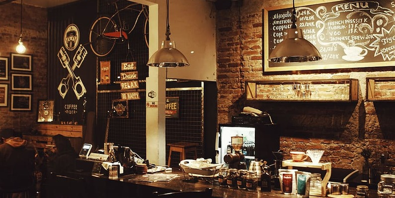

Nigeria Decides
A data-driven analysis of the 2019 & 2023 Presidential Elections — voter turnout, party dominance, and regional voting shifts. Built in Power BI.

Data Analyst
SQL • Advanced Excel • Power BI • Tableau • Microsoft Fabric
Turning raw numbers into decisions people can act on — clean dashboards,
reliable pipelines, and reports stakeholders actually use.

A data-driven analysis of the 2019 & 2023 Presidential Elections — voter turnout, party dominance, and regional voting shifts. Built in Power BI.
Exploratory T-SQL analysis of price anomalies, depreciation trends, and long-term ownership cost across a used-car dataset.

An interactive Power BI dashboard analysing a year of transaction-level coffee shop sales across time-of-day patterns and product mix.
A cohort-based severity analysis moving beyond prevalence counting into structured risk segmentation.
Data cleaning, pivot tables, and exploratory analysis of 233 countries uncovering regional growth patterns.
Two more projects spanning logistics analytics and my Microsoft Fabric / retail analytics work.
Interested in working together, or have a question about a project? Reach out — I'd love to hear from you.